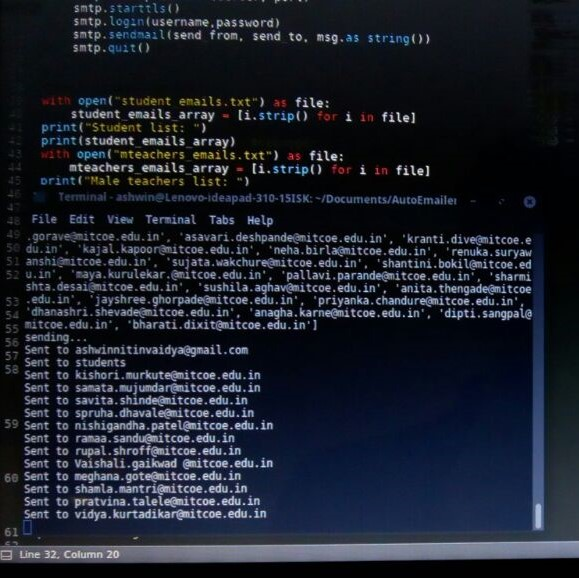

AutoEmailer
During my undergraduate, I was part of an organization called MIT Computer Users Group (MCUG). The group conducted activities such as teaching Linux. At that time we also published a quarterly newsletter explaining the latest in technology. We only made two physical copies while distributed it in digital format to the rest. Our mailing list consisted of 200+ teachers and included group emails of our alumni. We didn't use any mailing service and kept the email ids in a text file. When the time came to send the emails, we would split the list between each member and manually send the mail with the attachment individually. The challenge increased as we had to address the mail properly - "Dear Sir", "Dear Ma'am", "Greeting Students". As you can see this process was very tedious and time-consuming. After being fed-up with doing this each time we released an issue, I decided to write some script to automate this process. After all, I was pursuing computer engineering.
At that time I did not know python programming. I have seen that the best way to learn a programming language or a framework is by using it for a project. This way I don't end up parroting the tutorial and have a project that is useful to me. So, I decided that a python script to automate the process of sending the emails was a good way to learn the language and solve my problem.
I broke down the task as follows.
- The first thing I needed was a way to send emails using Python.
- Then, I needed a way to read the email list and sort it according to male teachers, female teachers and students.
- Finally, I needed to figure out how to attach the pdf file to the mail.
After searching a bit on Google, I found out about a library in python called smtp.
Simple Mail Transfer Protocol (SMTP) is a protocol that handles the transfer of mail between servers. It is just used for delivering a message. This was exactly what I needed. Using the smtp python library made it sending the message as easy as this.
def send_mail( send_from, send_to, subject, text, server, port, username, password):
msg = MIMEMultipart()
msg['From'] = send_from
msg['To'] = send_to
msg['Date'] = formatdate(localtime = True)
msg['Subject'] = subject
msg.attach( MIMEText(text))
smtp = smtplib.SMTP(server, port)
smtp.starttls()
smtp.login(username,password)
smtp.sendmail(send_from, send_to, msg.as_string())
smtp.quit()
There was one caveat though. Using smtp with Gmail meant that I had to enable "Less secure app access" each time I want to use the program. This has good reasons though as SMTP deals with the account password in plain-text. As this was a minor security issue, I went ahead and enabled less secure app access. Now I was good to proceed.
For the second part, I decided to just manually sort the list into three (one for each category) and just read from each file seperatly.
with open("student_emails.txt") as file:
student_emails_array = [i.strip() for i in file]
with open("mteachers_emails.txt") as file:
mteachers_emails_array = [i.strip() for i in file]
with open("fteachers_emails.txt") as file:
fteachers_emails_array = [i.strip() for i in file]
After, a bit of lazy programming, I now had three body content with almost the same text.
bodyStudent = "Hello, \nWe are pleased to bring you the June’17 edition of MCUG Newsletter.\nHope you like it! Your valuable suggestions will help us in improving future editions .\nPFA\n\nRegards,\nMCUG Newsletter Team."
bodyMTeachers = "Dear Sir,\nWe are pleased ...
bodyFTeachers = "Dear Ma'am,\nWe are pleased ...
Finally, it was time to attach the Newsletter. Luckily, even this part didn't turn out to be complicated. A little search on Google led me to make minor changes in the send_mail function.
def send_mail( send_from, send_to, subject, text, files, server, port, username, password):
msg = MIMEMultipart()
msg['From'] = send_from
msg['To'] = send_to
msg['Date'] = formatdate(localtime = True)
msg['Subject'] = subject
msg.attach( MIMEText(text) )
for f in files:
part = MIMEBase('application', "octet-stream")
part.set_payload( open(f,"rb").read() )
encoders.encode_base64(part)
part.add_header('Content-Disposition', 'attachment; filename="{0}"'.format(os.path.basename(f)))
msg.attach(part)
smtp = smtplib.SMTP(server, port)
smtp.starttls()
smtp.login(username,password)
smtp.sendmail(send_from, send_to, msg.as_string())
smtp.quit()
And that was it! Seeing it send emails one by one to a mailing list of ~200 teachers was pretty comforting and satisfying.
This was the only image I could dig up for my working program.

You can grab the entire code here.
Thanks for reading 😎